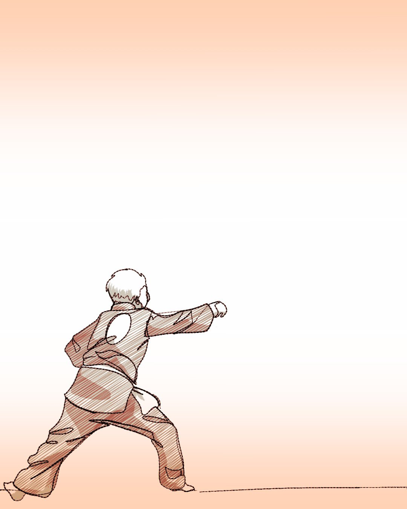
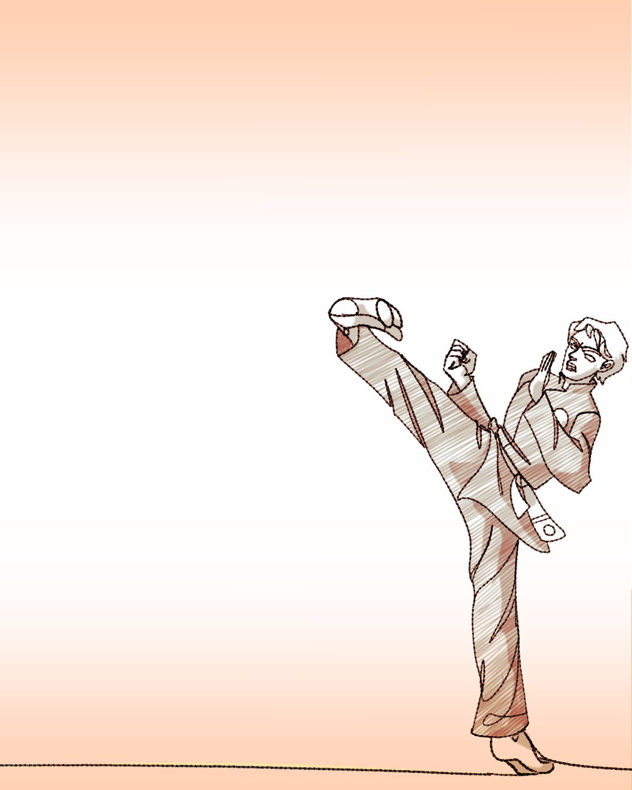

01
Motricità — La via del Panda
4 – 6 anni
Venerdì17.15 – 18.00
Durata45 minuti
Un corso pensato per stimolare il movimento nei più piccoli, in un'epoca in cui i cortili
sono sempre più rari. Si lavora su equilibrio, coordinazione, schema motorio, rapporto con
lo spazio, riconoscimento delle prime regole condivise — il tutto attraverso il gioco.
Non è una lezione di tecnica marziale: è la preparazione del terreno su cui la tecnica
potrà attecchire negli anni successivi.

02
Bimbi
6 – 13 anni
Lunedì18.00 – 19.00
Venerdì18.00 – 19.00
Durata1 ora · 2 lezioni/sett.
Disciplina e gioco si uniscono per aiutare i bambini a crescere con autostima e rispetto.
Si introducono le tecniche fondamentali (posizioni, pugni, calci, prime forme), il saluto,
il rispetto delle regole. Lavoriamo molto sul gruppo: cooperazione, ascolto, capacità di
sbagliare senza demolirsi. Il combattimento compare progressivamente, sempre in quadri
ludici e controllati.

03
Adulti
dai 13 anni
Lunedì19.30 – 21.00
Venerdì19.30 – 21.00
Durata1h 30' · 2 lezioni/sett.
Un percorso che ti spinge fuori dalla zona di comfort, migliorando forza fisica e mentale.
Tecnica a mani nude, studio delle forme (Quyền), condizionamento specifico, combattimento
regolato. Il programma segue l'ordinamento tecnico dell'Unione Italiana Qwan Ki Do e porta
gli allievi, lezione dopo lezione, attraverso il sistema dei gradi. Una disciplina che
promuove resilienza e benessere, accessibile sia a principianti adulti sia a ragazzi.